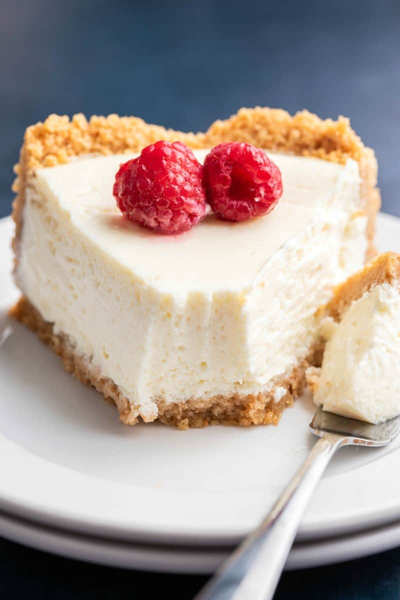
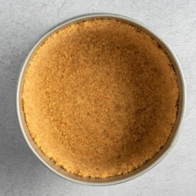
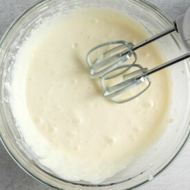
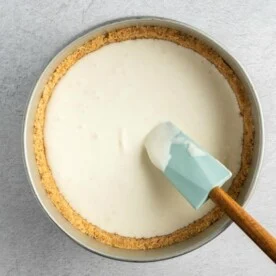

. vegan cheesecake . home

It's no secret that I love cheesecake. Although up until now, they've been of the no bake variety. We've had the classic no bake cheesecake and the chocolate version, but now? We have, what I consider, the Vegan Cheesecake.
. ingredients
- 1 8-inch pie crust
- 16 oz vegan cream chees
- 2/3 cup sugar
- 2 tablespoon cornstarch
- 3 tablespoon milk of choice
- 1 tablespoon lemon juice
- 1 teaspoon
. method
- Prepare your pie crust in an 8-inch pan, and set aside. Preheat the oven to 180C/350F.

- In a large mixing bowl, add your softened cream cheese with sugar and beat on low, until smooth and creamy. While still on low, add in the cornstarch, milk, lemon juice, and vanilla extract. Continue beating on low until combined. Once combined, turn up to high and continue beating, until smooth.

- Transfer your cheesecake into the prepared pie crust. Bake the cheesecake for 40-45 minutes.

. special equipment